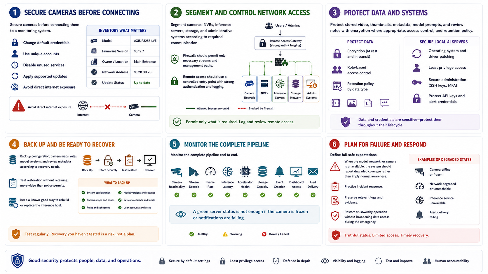

Security and Reliability Considerations
Connecting to LMS... Progress: in progress

Narration
Secure cameras before connecting them to a monitoring system. Change default credentials, use unique accounts, disable unused services, apply supported updates, and avoid direct internet exposure. Inventory model, firmware, owner, network address, and update status.
Segment cameras, NVRs, inference servers, storage, and administrative systems according to required communication. Firewalls should permit only necessary streams and management paths. Remote access should use a controlled entry point with strong authentication and logging.
Protect stored video, thumbnails, metadata, model prompts, and review notes with encryption where appropriate, access control, and retention policy. Local AI servers require operating-system and driver patching, least privilege, secure administration, and protection of API keys or alert credentials.
Back up configuration, camera maps, rules, model versions, and review metadata according to recovery needs. Test restoration without retaining more video than policy permits. Keep a known-good way to rebuild or replace the inference host.
Monitor the complete pipeline: camera reachability, stream decode, frame rate, inference latency, accelerator health, storage capacity, event creation, dashboard access, and alert delivery. A green server status is not enough if the camera is frozen or notifications are failing.
Define fail-safe expectations. When the model, network, or camera is unavailable, the system should report degraded coverage rather than imply normal awareness. Practice incident response, preserve relevant logs, and restore trustworthy operation without broadening data access during the emergency.